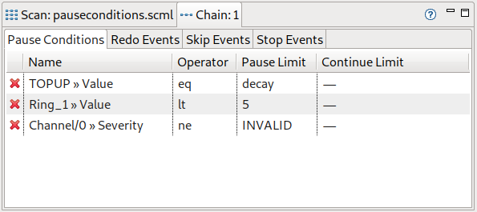

What’s New in EVE Editor
Version 1.36.0 (2021-XX-YY)
- [Feature-#5742] Scanmodule and chain pause events are no longer available. Old scans containing those are transformed into newly introduced pause conditions a.k.a. inhibit state. The pause event tab in the SM Events View has been removed. Pause conditions can be added, removed and edited in the Chain View:

When loading scml files of prior versions, events are transformed as follows: Scanmodule pause events and chain pause events are transformed into chain pause conditions. Hysteresis definitions are detected and combined (using the new continue limit). Duplicates are eliminated.
For older versions, see the What’s New Archive.